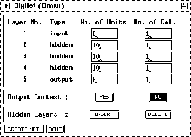

By clicking on the button in the BigNet menu,
the BigNet window for Elman networks (see fig. ) is opened.
) is opened.

The number of units of each layer has to be specified in the column No. of Units. Each hidden layer is assigned a context layer having the same size. The values in the column No. of Col. have the same meaning as the corresponding values in the BigNet window for Jordan networks.
The number of hidden layers can be changed with the buttons
and .  adds a new
hidden layer just before the output layer. The hidden layer with the
highest layer number can be deleted by pressing the
adds a new
hidden layer just before the output layer. The hidden layer with the
highest layer number can be deleted by pressing the  button. The current implementation requires at least one and at most
eight hidden layers. If the network is supposed to also contain a
context layer for the output layer, the
button has to be toggled, else the button. Press the
button. The current implementation requires at least one and at most
eight hidden layers. If the network is supposed to also contain a
context layer for the output layer, the
button has to be toggled, else the button. Press the  button to create the
net. The generated network has the following properties:
button to create the
net. The generated network has the following properties:
Click on the  button to close the BigNet window for
Elman networks.
button to close the BigNet window for
Elman networks.